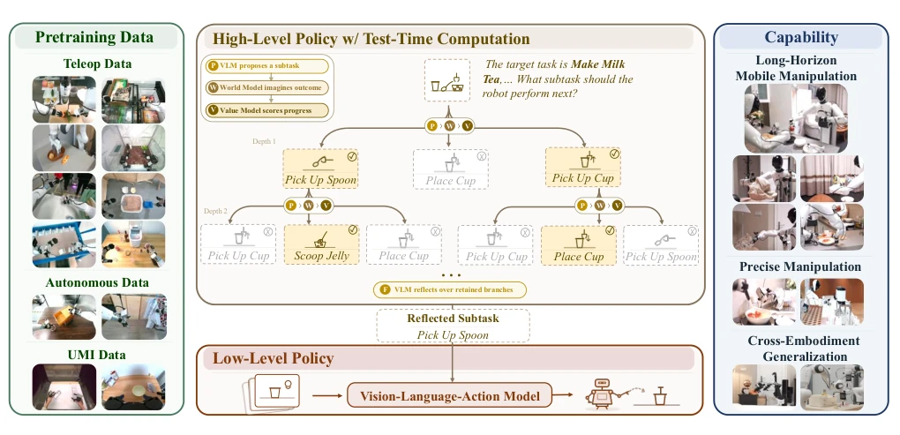
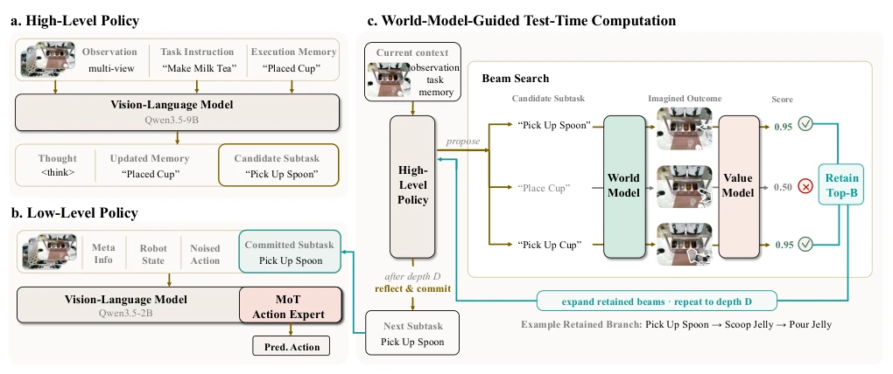
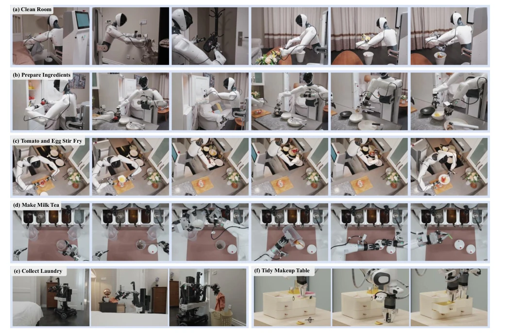
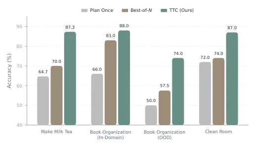
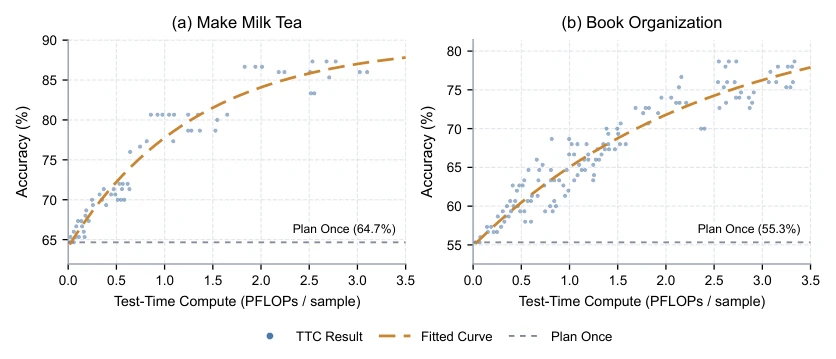

τ0-VLA has taught the robotics community a lesson in 'thinking before acting', forcibly embedding the 'think more before outputting' reasoning capability of large models into long-horizon task planning. Its core selling point is using world models for 'rehearsal', mentally simulating consequences before taking action; this approach is indeed much more reliable than those 'impulsive' direct decision-making VLA models (such as GR00T [8] or π0.5 [4]), especially in tasks with many steps and low fault tolerance like 'scrambled eggs with tomatoes', where the success rate is significantly higher. However, this 'trial-and-error cost' is shifted to inference time; Beam Search and deep search mean a surge in computational overhead, and for scenarios with extremely high real-time requirements, this 'slow work yields fine products' strategy may turn into 'slow work yields accidents'. Furthermore, although claimed to be cross-morphology generalizable, the unified action space actually has very high requirements for hardware standardization; changing robots might require re-tuning parameters again, and under the so-called 'Foundation Model' halo, there are still many pitfalls in engineering implementation.
The core pain point of Long-Horizon Manipulation lies in: many task steps, long decision chains; once high-level decisions go wrong, even precise low-level actions cannot save it. Existing hierarchical VLA models mostly adopt single forward pass (Single Forward Pass) to directly generate subtasks, lacking evaluation mechanisms for alternative options [1, 15, 26]. This 'single-thread' decision mode leads to the model being unable to allocate extra computational resources when uncertain; once the wrong subtask is selected (e.g., grabbing the spoon first or the cup first), the environment state is irreversibly changed, and subsequently only passive remediation is possible. Although existing work has attempted to introduce tree search or subgoal refinement [32, 42, 44], they often lack intuitive prediction of physical consequences, or rely only on language reasoning while ignoring visual verification. τ0-VLA aims to solve this bottleneck: reconstructing high-level subtask generation as a computationally scalable inference problem, utilizing world models to predict visual outcomes of different subtasks 'before execution', thereby avoiding potential errors at the decision stage and achieving true 'plan before acting'.

Fig. 1: Overview of τ0-VLA. The high-level policy uses world-model-guided test-time computation to search over subtask sequences. At each expansion step, a VLM proposes candidate subtasks, a world model predicts their visual outcomes, and a value model evaluates the resulting task progress. Beam search retains promising branches, after which a reflective model commits to the next subtask based on the retained candidates and their predicted consequences. The figure illustrates a single candidate expansion with N = 3; recursive beam expansion to depth D is omitted for brevity. The selected subtask then conditions a low-level VLA policy trained on 40,115 hours of heterogeneous real-world data, enabling long-horizon mobile manipulation, precise execution, and deployment across multiple robot e
τ0-VLA adopts a hierarchical architecture, containing High-Level Policy and Low-Level Policy. The High-Level Policy is responsible for planning subtask sequences, while the Low-Level Policy is responsible for executing specific actions. The overall process is a closed loop: the High-Level generates subtasks based on current observations and memory, the Low-Level executes and updates memory, then enters the next round. The core innovation lies in the High-Level Policy introducing a 'Test-Time Computation' (Test-Time Computation, TTC) mechanism. When the High-Level model's confidence in the current decision is insufficient, the TTC process is triggered: 1. Proposal Model (Proposal Model, P) generates multiple candidate subtasks; 2. World Model (World Model, W) predicts the terminal visual state after each candidate subtask execution; 3. Value Model (Value Model, V) scores based on predicted results and task instructions; 4. Retain high-score branches through Beam Search (Beam Search), finally the Reflective Model (Reflective Model, F) synthesizes all branch information to generate the final subtask. The Low-Level Policy is based on a unified 40-dimensional state space, combining Qwen3.5 visual-language backbone and MoT action experts, generating actions through Conditional Flow Matching (Conditional Flow Matching), supporting multi-morphology robots. Training data covers 40,115 hours of heterogeneous real data, and memory perturbation data was specifically constructed to enhance the High-Level Policy's ability to correct execution history.

Fig. 2: The hierarchical τ0-VLA architecture. (a) At a high-level inference step t, the proposal model P conditions on the latest multi-view observation ot, task instruction ℓ, carried execution memory Mt−1, and previously generated subtask z⋆ t−1. It produces observation-aligned memory Mt and a direct proposal zdir t . (b) The low-level policy conditions on the generated subtask z⋆ t , multi-view observation ot, proprioceptive state st, and textual control metadata η. A vision-language backbone and Mixture-of-Transformers (MoT) action expert generate the action chunk at:t+H−1 through conditional flow matching from a noisy action chunk. (c) On the TTC route, the proposal model is invoked N times for each retained branch to generate N candidates. Given the branch’s head-camera image and a c
实验Experiments
实验在 AGIBOT G1、ARX AC One 和 Franka Research 3 等多形态机器人上进行，涵盖清洁房间、备菜、炒番茄炒蛋、做奶茶等长程任务。基线包括 GR00T [8]、LingBot-VLA [40] 和 π0.5 [4]。评测指标为成功率（SR）和进度分（Progress）。结果显示，引入 TTC 机制的 τ0-VLA 在‘做奶茶’任务上将成功率从 50% 提升至 70%，在‘清洁房间’等复杂任务上显著优于直接执行基线。消融实验表明，执行记忆（Execution Memory）对长程状态追踪至关重要，而测试时计算预算的增加能线性提升子任务预测准确率。特别是在‘书本整理’的分布外（OOD）设置下，τ0-VLA 展现了更强的泛化能力，证明了其通过视觉预演进行推理的有效性。
Experiments were conducted on multi-morphology robots such as AGIBOT G1, ARX AC One, and Franka Research 3, covering long-horizon tasks such as cleaning rooms, food prep, scrambled eggs with tomatoes, making milk tea, etc. Baselines include GR00T [8], LingBot-VLA [40], and π0.5 [4]. Evaluation metrics are Success Rate (SR) and Progress Score (Progress). Results show that τ0-VLA with TTC mechanism improved success rate from 50% to 70% on the 'making milk tea' task, and significantly outperformed direct execution baselines on complex tasks like 'cleaning rooms'. Ablation experiments show that Execution Memory (Execution Memory) is crucial for long-horizon state tracking, and increasing test-time compute budget can linearly improve subtask prediction accuracy. Especially under the 'book organization' Out-of-Distribution (OOD) setting, τ0-VLA demonstrated stronger generalization ability, proving the effectiveness of its reasoning through visual rehearsal.

Fig. 3: Representative physical-robot evaluation tasks. (a) Clean Room requires collecting two dirty garments, placing them in a laundry basket, hanging a handbag, handing a blanket to a person, and disposing of table trash. (b) Prepare Ingredients requires retrieving a tomato and an egg, then cracking and stirring the egg while returning the tools. (c) Tomato and Egg Stir Fry requires chopping and transferring the tomatoes, cooking and seasoning the ingredients, plating the dish, and returning the cookware and utensils. (d) Make Milk Tea requires adding toppings, pouring milk and tea, sealing the cup, and inserting a straw. (e) Collect Laundry requires transferring a T-shirt from the bedside table to a laundry basket. (f) Tidy Makeup Table comprises three separately scored instruction-fol

Fig. 4: Next-subtask prediction accuracy under different high-level inference methods. We compare Plan Once, Best- of-N, and TTC (Ours) across four evaluation settings: Make Milk Tea, Book Organization (In-Domain), Book Organization (OOD), and Clean Room.

Fig. 5: Relationship between computational cost and subtask-prediction accuracy. The accuracy increases with additional computation for the Make Milk Tea and Book Organization tasks, shown in panels (a) and (b), respectively. Each point represents an experimental result obtained at a different computational cost. The orange dashed curves show saturation fits to these results, and the gray dashed lines indicate the Plan Once baselines.